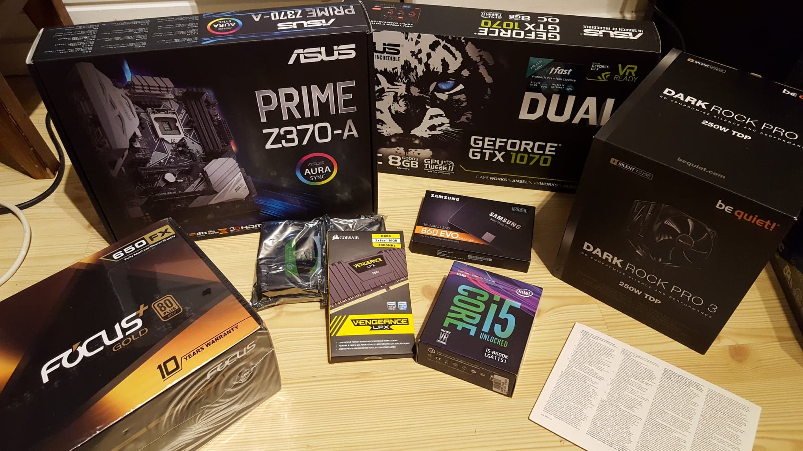

Digitalt utstyr
Ein er omgitt av digitalt utstyr heile tida, som mobiltelefonar, PC'ar, digitale klokker og kortlesarar.
Digitalt utstyr er datamaskinar som er likt oppbygd.
Alle datamaskinar består av ein prosessor, minnebrikker, harddisker, grafikkort, straumkjelde og eit hovudkort.
Datamaskin
Dette er delane eg brukte til å byggje denne datamaskina.
Kraftigere PC'ar treng også fleire kjølekomponenter som vifter eller vannpumper.
PC'en i videoen har ein vifte kjølar til prossesoren.
Digitale nettverk
Nettverkskortet i digitalt utstyr gjer at ein kan koble seg opp mot eit nettverk av andre enheiter. Som for eksempel ein datamaskin og ein ruter i eit heimenettverk.
I heimenettverk blir det oftast brukt WLAN (Wireless Local Area Network).
Dette gjer at datamaskiner kan koble seg til internett, og kommunisere med kvarandre.
Mobiltelefoner bruker gjerne 4G/5G gjennom mobilnett.